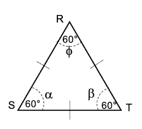
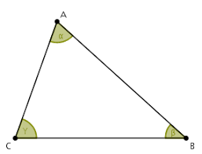

El triángulo acutángulo o agudo es una figura geométrica, el cual tiene tres ángulos internos agudos, es decir, la medida de cada uno de sus ángulos es menor a 90°.

Donde: A < 90°, B < 90° y C < 90°.
Esta categoría de triángulo es un caso muy particular dentro de los tipos de triángulo según la medida de sus ángulos internos. En este punto, vale recordar que el triángulo es un polígono, es decir, una figura geométrica bidimensional que se constituye de la unión de distintos puntos (que no formen parte de la misma línea) mediante segmentos de recta. De ese modo, se construye un espacio cerrad

Existen triángulos que cuentan con las características del triángulo acutángulo y también presentan otras características que representa al otro tipo de triángulo.